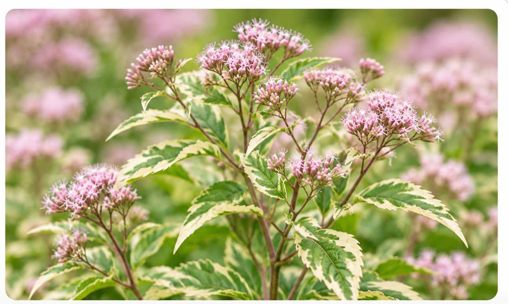

ユーパトリウム
わが家で育てている3種類の生育・開花記録

ベイビージョー
大きくふんわりとした花房
ボリュームのある花房が魅力。挿し木株を含め、わが家での成長と開花を記録しています。
生育記録を見る →

ピンクフロスト（斑入り）
斑入り葉と開花の記録
クリーム色の斑が入る葉と、淡いピンクの花のコントラストが魅力です。
生育記録を見る →

青花丸葉フジバカマ
丸みのある葉と青紫花の記録
青紫色の花と、葉脈が目立つ緑の葉が特徴。育ち方と開花の様子を記録します。
生育記録を見る →
概要
フジバカマやユーパトリウムは、アサギマダラが好む花として知られています。このページでは、それぞれの品種の生育記録や庭での様子をまとめています。